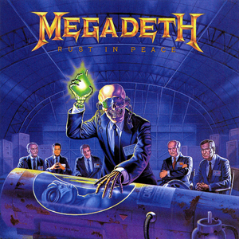

Álbuns Favoritos
1º / Tranquility Base Hotel & Casino (2018)

Do grupo que definiu o Rock Indie em 2013, Arctic Monkeys trouxeram em 2018 o álbum conceptual "Tranquility Base Hotel & Casino" que desafiou os fãs conquistados durante o sucesso de AM (2013). Este, tornou-se rapidamente a Soundtrack de um ano crucial na minha vida.
2º / Stadium Arcadium (2006)

Os Red Hot Chili Peppers são provavelmente a minha banda favorita, tendo neles dois dos meus músicos favoritos. Flea, como baixista, fez-me querer começar a tocar baixo, e John Frusciante como guitarrista, serve como o meu modelo, do guitarrista que quero ser, sendo ele o meu favorito. Este álbum é sem sombra de dúvida a soundtrack da minha vida desde 2018 até 2022.
3º / Rust In Peace (1990)
Na minha jornada pelo mundo da guitarra, tive um awakening ao experienciar o solo de Friedman em "Tornado Of Souls", música do album de 1990 da banda Megadeth. Dave Mustaine, antigo guitarrista dos Metallica, liderou mais uma vez a banda de Thrash Metal num projeto que se tornou uma referência no mundo da música e que pontapeia as portas do Metal para mim.